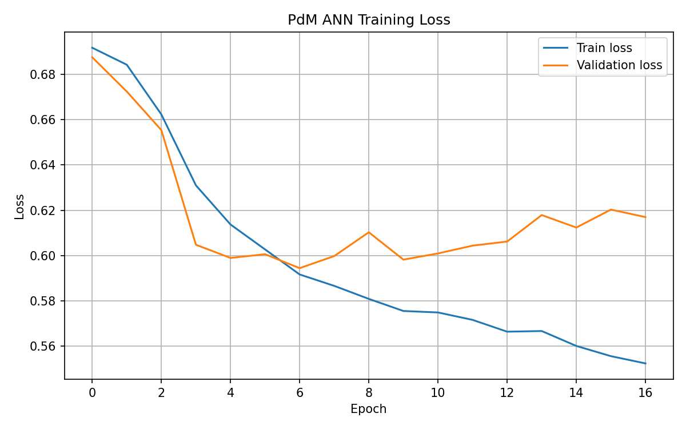
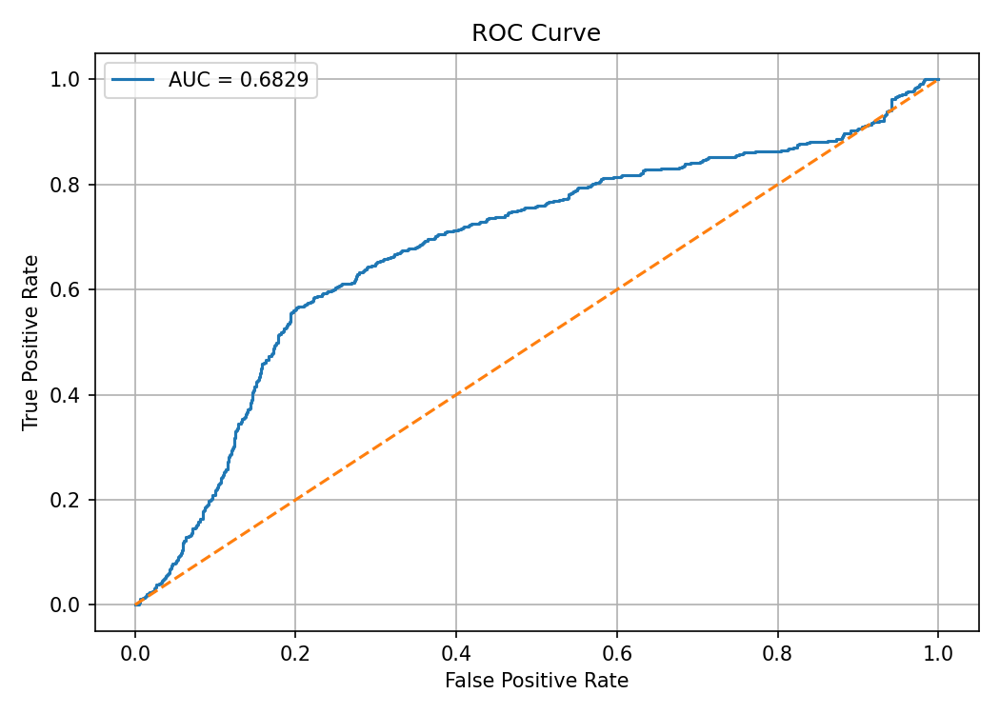
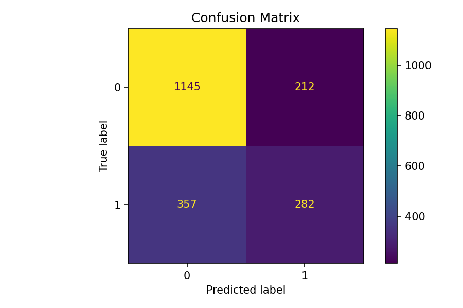

Advanced machine learning approach for early equipment failure detection using neural networks and dynamic feature synthesis.
Сучасний підхід на базі машинного навчання для раннього виявлення відмов обладнання за допомогою нейромереж та динамічного синтезу ознак.
The core concept of Predictive Maintenance (PdM) is to transition from reactive maintenance (fixing things after they break) to proactive scheduling based on continuous state monitoring. This pipeline achieves this by building advanced feature groups:
Головна концепція прогностичного обслуговування (PdM) полягає у переході від реактивного ремонту (виправлення поломок постфактум) до проактивного планування на основі постійного моніторингу стану. Цей комплекс реалізує це через побудову розширених груп ознак:
Extracts cycles, hourly shifts, weekends, and calendar milestones (time_step, shift_id, is_weekend) to learn operating patterns affected by plant schedules.
Виділяє цикли, погодинні зміни, вихідні дні та календарні віхи (time_step, shift_id, is_weekend) для виявлення закономірностей, на які впливає графік роботи підприємства.
Simulates outdoor thermal cycles and shifting humidity trends via sine-wave mathematical foundations to trace ambient stress correlations.
Симулює добові термічні цикли та коливання вологості за допомогою тригонометричних математичних моделей для відстеження впливу зовнішнього стресу на залізо.
Integrates internal telemetry (Torque, Rotational speed, Tool wear) into a unified metric: load_percent. This parameter further derives industrial attributes such as current consumption, voltage fluctuations, active power, and Root Mean Square vibration readings (vibration_rms).
Інтегрує показники внутрішньої телеметрії (крутний момент, швидкість обертання, знос інструменту) в єдину метрику: load_percent. Цей параметр далі формує промислові атрибути: споживання струму, коливання напруги, активну потужність та середньоквадратичне значення вібрації (vibration_rms).
The core target is a sliding forecast window looking exactly 24 steps into the future (failure_in_next_24_steps). Predicting failures far in advance allows human operators enough time to react and schedule emergency shutdowns smoothly.
Головна ціль навчання — це ковзне вікно прогнозування рівно на 24 кроки вперед (failure_in_next_24_steps). Передбачення аварії заздалегідь дає операторам достатньо часу для планового зупину обладнання.
To ensure real-world viability, the baseline network was regularized with structured Dropout (0.5) and an aggressive 10⁻⁴ L2 weight decay penalty. This combination heavily guards the model against overfitting to local noise. While this introduces a slightly broader variance in individual loss outputs (higher instant probability of error), it significantly elevates the network's capacity to recognize global degradation signatures.
Для забезпечення стабільності в реальних умовах, базова мережа була модифікована структурованим Dropout (0.5) та штрафом L2-регуляризації ваг 10⁻⁴. Це поєднання захищає модель від перенавчання на локальних шумах. Хоча це призводить до вищої дисперсії окремих локальних похибок, воно значно підвищує здатність мережі розпізнавати глобальні ознаки зносу.
The metrics confirm that the regularized framework significantly outperforms the classical baseline structure:
Метрики підтверджують, що прогностична модель із посиленою регуляризацією значно перевершує класичну базову структуру:

Stable Optimization Loss
Стабільна функція втрат

ROC Curve (AUC = 0.6829)
Крива ROC (AUC = 0.6829)

Confusion Matrix (Enhanced Failure Catch: 282 units)
Матриця помилок (Покращене виявлення: 282 верстати)